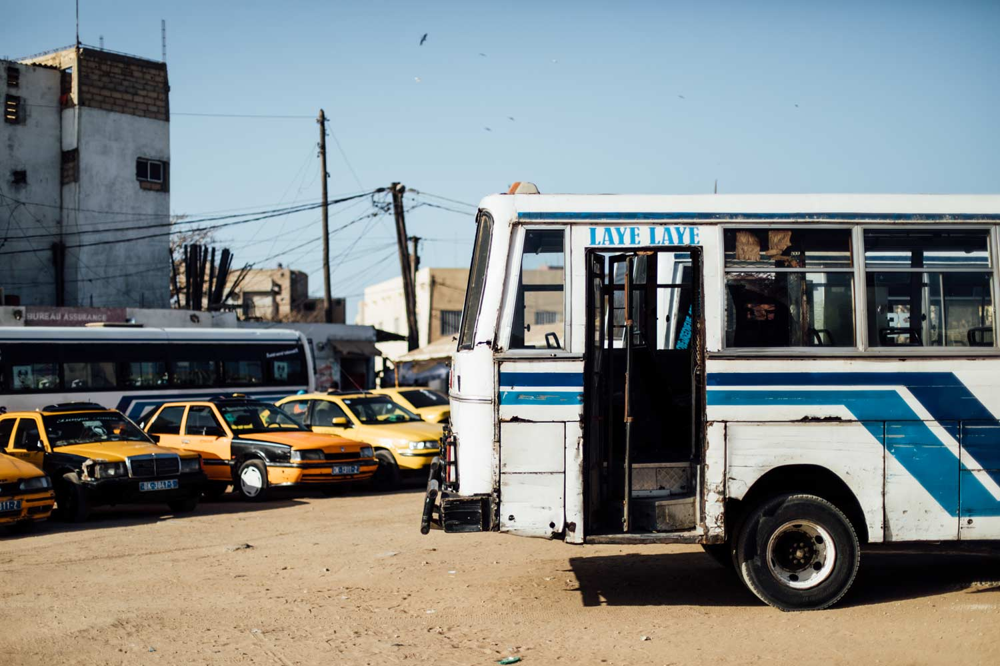
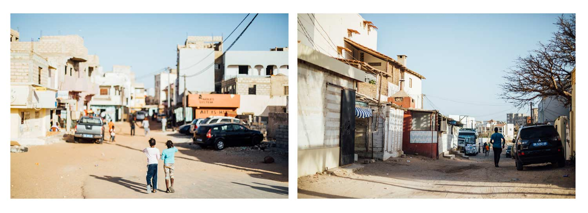
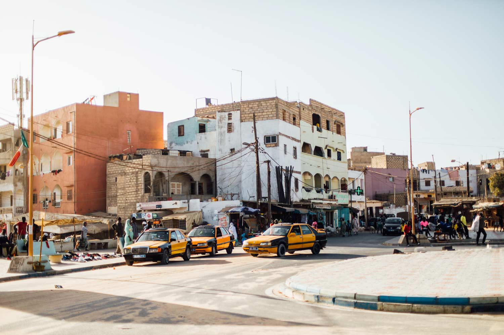
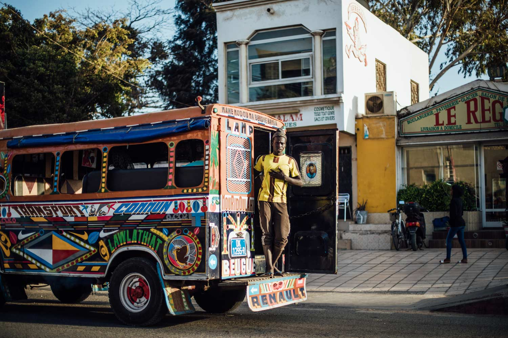

A la découverte du Sénégal et ses contrées
Vous rêvez d’Afrique et de soleil ? Laissez-vous tenter par un voyage au Sénégal De la nature sauvage du Siné Saloum aux sublimes plages de Casamance,
c’est une belle aventure qui s’annonce, dans une ambiance chaleureuse.
Dès votre arrivée à Dakar, vous serez plongé dans la convivialité typiquement sénégalaise, dans les marchés colorés comme dans les bars branchés où viennent jouer des artistes locaux.
Pas très loin, l’île de Ngor et l’île de Gorée vous invitent à une douce escapade sur le sable fin… Vos vacances au Sénégal sont aussi l’occasion rêvée de :
Profitez de votre voyage au Sénégal pour vivre des expériences insolites
Vibrante, bruyante, tentaculaire, polluée … les adjectifs ne manquent pas pour désigner la capitale du Sénégal.En 24 heures difficile de visiter
Dakar dans les moindres recoins évidemment tant la ville est étendue et le trafic souvent dense et laborieux. En réalité, il faudrait bien 24 heures pour simplement
s’acclimater à la ville qui peut sembler “violente” surtout si comme nous, vous revenez du Siné Saloum. Fort heureusement, nous avions posé nos sacs à dos à l’hôtel La Madrague
Surf-beach-sea qui ne se situe pas en centre-ville mais juste en face de l’île de N’gor sur le front de mer. Un emplacement de choix pour souffler et se promener tranquillement.
Pour nous qui sommes accro à quadriller les villes et à tout faire à pied, il faut reconnaître qu’à Dakar c’est impossible. Le mieux reste tout de même de prendre
un bus ou un taxi malgré les embouteillages qui n’en finissent pas. Je ne vais pas vous la jouer “visiter Dakar, le guide de voyage” d’abord parce que nous y sommes restés qu’une journée
(+ une fin d’après-midi), qu’il y a sûrement beaucoup de petites boutiques, spots, promenades à faire que nous n’avons pas eu le temps de voir. Enfin, et surtout, parce qu’il faut bien le reconnaître
, mais on ne part pas en voyage au Sénégal pour rester
à Dakar une semaine.
Pour ce mini-city-guide de Dakar, j’ai décidé de vous présenter les endroits qu’on a pu visiter via trois spots photos qu’on a adoré. Ça vous permettra déjà d’avoir
un premier regard sur Dakar et qui j’espère, vous donnera envie d’en savoir plus.




Le marché de Soumbédioune
Un coup de cœur à Dakar ! Mais attention il faut s’accrocher. Ça se pousse, ça parle fort, les pêcheurs qui arrivent ne se gêneront pas de vous pousser si vous vous trouvez sur
leur chemin. Le marché de Soumbédioune est un magnifique tableau coloré à l’image du Sénégal. Il y a les pirogues (que j’aime tant), les femmes et leurs beaux habits de wax, les poissons tous plus
beaux les uns des autres. Attention, petite mise en garde, il est préférable que vous demandiez avant de faire des photos des gens ou même de leur poisson. Déjà parce que ça permettra d’avoir un
premier contact et aussi par respect pour eux. Ils font très attention à ça et pourraient vous “embrouiller” si vous les prenez en photo en cachette (ou vous demandez de l’argent).
L'île de Gorée
Je pense ne pas me tromper en affirmant que l’île de Gorée est un incontournable si vous visitez Dakar. Pour être honnête, au début je n’avais pas
prévu d’y aller. C’est Pape, notre guide Terres d’Aventure, qui m’a convaincue. Je vais être franche, l’île est
très jolie. Photographiquement c’est super intéressant, mais mon premier sentiment n’a pas été aussi positif. D’abord à la montée pour la navette, les horaires ne sont pas respectées, c’est le bordel
pour se faufiler et trouver une place, tout le monde se pousse (autant les sénégalais que les touristes). En tant que touriste la traversée te coutera le double. Bon très bien. Arrivée sur l’île de
Gorée nous débarquons et les touristes sont dirigés vers un poste où il faut encore sortir les billets pour une certaine autorisation de-je-ne-sais-pas-vraiment-quoi. Même notre guide ne savait pas nous
expliquer ; lui ne l’a pas payé par contre. On se dirige vers la maison des Esclaves où tout le monde s’agglutine pour faire LA même photo que je n’ai pas faite, excusez-m’en— ; l’entrée est encore
une fois payante (et les photos interdites). Nous ferons alors demi-tour pour préférer nous perdre dans ce dédales de petites ruelles ombragées et fleuries qui ne sentaient pas le touriste.
La plage de N'gor
Le petit village de N’gor (comme nous disaient les habitants) était juste à côté de notre hôtel. La balade y est vraiment agréable, c’est sympa de découvrir
ces petites ruelles qui m’ont instinctivement fait penser aux Médina. Je ne suis jamais allée au Magreb mais j’avais bien assez d’images en tête pour avoir l’impression d’être quelque part à Fès ou à
Marrakech (les couleurs vives en moins peut-être). Depuis cette plage vous pouvez emprunter un petit bateau (les pêcheurs qui peuvent vous y emmener ce n’est pas ce qui mange) pour vous rendre
sur l’île de N’gor, plus connu et plus riche aussi. Un tout autre visage de Dakar (et du Sénégal) vous y attend, mais pour sortir de l’euphorie de Dakar ça peut être sympa, si vous
cherchez le calme dans la ville. Le soleil se couche sur la pointe ouest de la plage, magnifique, à ne pas louper !